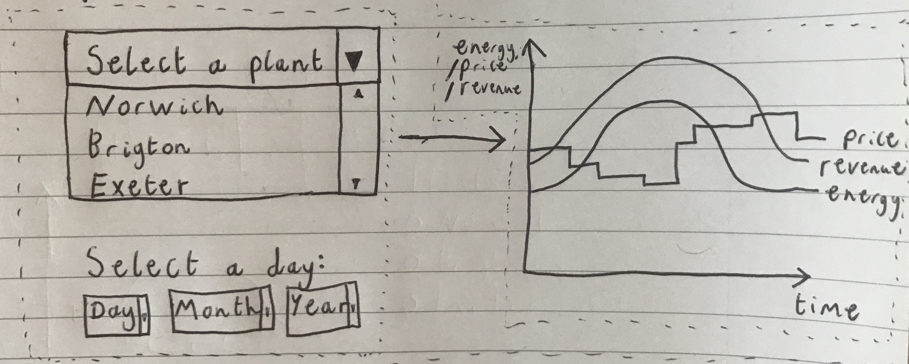
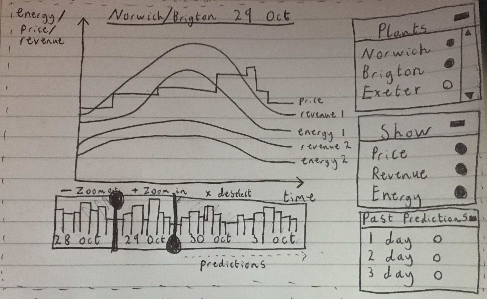
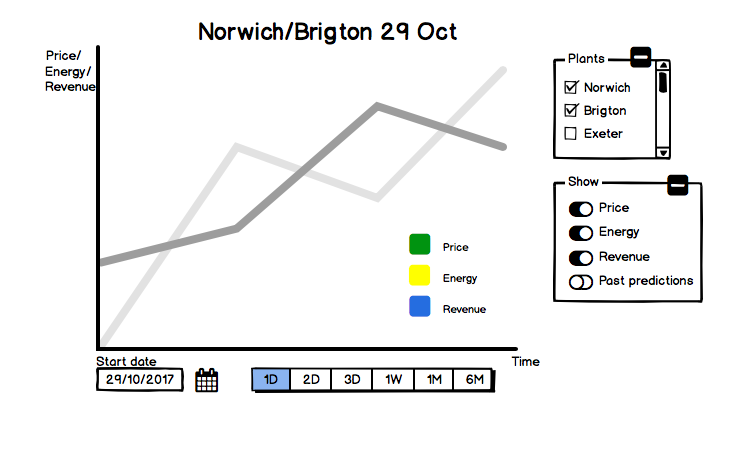
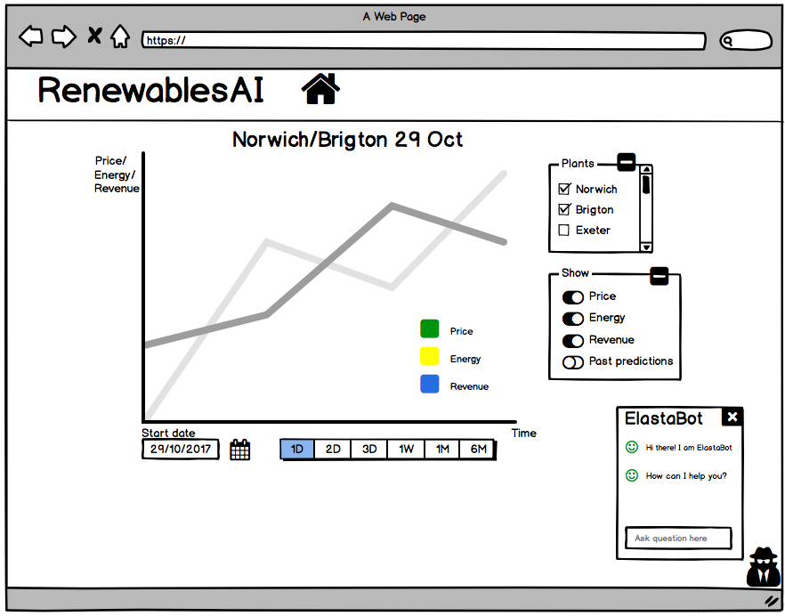

HCI
Gathering User Data
Before our team started designing the prototypes for the Chatbot and the Data Science part, we decided to conduct some research by asking some of our colleagues to answer some survey questions. They were asked questions about User Interface and Chatbot features that they would like to see implemented. (the proportions on the charts are in percentages %)
Scenario
After we have created the personas, we got an general idea of why and how the user will use our appplication. We came up with a scenario which summerize well the interaction between the user and our web.
Renewables.ai scenario
Mark is a 30 year old entrepreneur who has just started his own business. His company is a local energy provider. After a thorough research, he reached the conclusion that green energy is more profitable on the long term. Because the company’s quarter is located in Eastbourne, he thought about taking advantage of the geographical potential of the area and built a solar power plant. Being new on the market and without any previous experience in solar energy, he turned to Renewables.AI platform. Mark can log into his account and can visualize a personalized view of the data received from the panels. He now has a good estimation of how much energy the panels are going to produce each day, as well as a precise prediction of how much revenue he can make daily. This gives him a good feedback on how well his company is performing and helps him make decision for the long term. When he wants to see quick information such as the weather forest for the next 7 days or a summary of the plant info, he interacts with the chat box integrated in the user interface. Moreover, whenever Mark needs guidance on how to interact with the graphs, the chat box will explain him to do it. Despite him not having any previous experience with solar energy, he is able to stay a valid competitor in the market.
Iterations
| Iteration | Comments |
|---|---|
|  |
|

|
|

|
|
|  |
|
|  |
|
|  |
|
Sketches

Data Science Prototype
We used the library Chart.js to implement the interactive Prototype of the graph. The user can now click the "Add Actual Production" or the "Remove Actual Production" buttons to show or hide the Actual Production line and the "1 hour" button to show the Revenue and Price Prediction for the next hour. For now, just this button is implemented and can be clicked multiple times to show a further prediction. Nevertheless, the current prediction lines are plotted using randomized data, which is due to be replaced with a proper dataset at a later stage of the project. One of the main aims is to also improve the accuracy of the prediction lines using machine learning algorithms.
Bot Prototype
After conducting some research into how chatbots work and what techniques can be used to build rich and capable bots, our team started to sketch some straightforward interactions with the so called "Elastabot. As, we discovered that we can implement the ability to send or receive attachments, ask the bot for more information by pressing the relevant buttons or by asking direct questions, we began by drawing some basic conversations. We are aiming to later implement the bot to using LUIS(Natural Language Understanding Software) so that it could make relevant suggestions based on the conversation with the user.

Prototypes Evaluation
In order to evaluate our prototypes, we used the Heuristic Evaluation as well as user testing.
Our main goal was to come up with user-friendly features that enabled users to get all kind of information, from the prediction line on the graph to a quick presentation on how to use Renewables.AI with the help of our chatbox.
After the finishing the first ptotoype, we saw some flaws which we later fixed, as they are presented in the Heuristic Evaluation
| Problem no. | Location&Description | Heuristic | Solution | Severity(0-4) |
|---|---|---|---|---|
| 1 | Graph prediction - user could not show/hide the "actual revenue" line if he/she wanted | User control and freedom | Added a "remove" button | 2 |
| 2 | Graph prediction - different graphs for 1 day/1 week/1 month prediction | Consistency and standards | Created one graph with buttons for each option | 3 |
| 3 | The chatbox could not explain to new users how Renewables.AI works | Flexibility and efficiency of use | Incorporated this option into the chatbox | 2 |
| 4 | Graph prediction - the user feedback for the timeline selector for the graph timeframe was that it's confusing and they would prefer simple buttons | Consistency and standards | In a later iteration we removed the timeline selector feature and replaced it with a group of buttons | 3 |